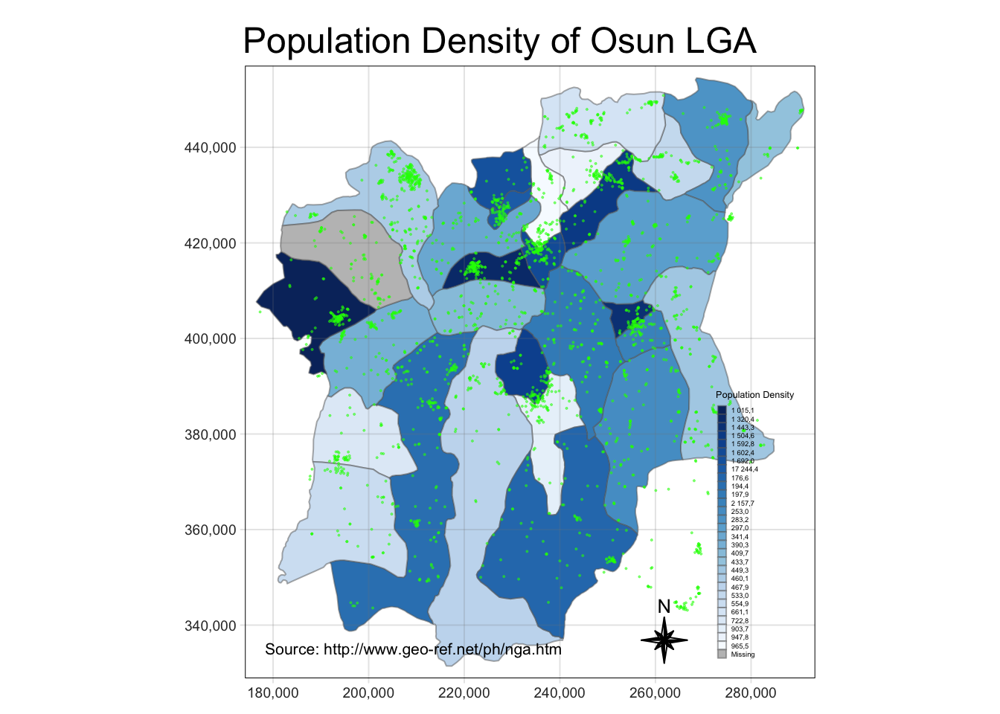

pacman::p_load(sf, raster, spatstat, tmap, tidyverse, sfdep, maptools)Take Home Exercise 1
1 Setting the Scene
Water is an important resource to mankind. Clean and accessible water is critical to human health. It provides a healthy environment, a sustainable economy, reduces poverty and ensures peace and security. Yet over 40% of the global population does not have access to sufficient clean water. By 2025, 1.8 billion people will be living in countries or regions with absolute water scarcity, according to UN-Water. The lack of water poses a major threat to several sectors, including food security. Agriculture uses about 70% of the world’s accessible freshwater.
Developing countries are most affected by water shortages and poor water quality. Up to 80% of illnesses in the developing world are linked to inadequate water and sanitation. Despite technological advancement, providing clean water to the rural community is still a major development issues in many countries globally, especially countries in the Africa continent.
To address the issue of providing clean and sustainable water supply to the rural community, a global Water Point Data Exchange (WPdx) project has been initiated. The main aim of this initiative is to collect water point related data from rural areas at the water point or small water scheme level and share the data via WPdx Data Repository, a cloud-based data library. What is so special of this project is that data are collected based on WPDx Data Standard.
The data we will be using here are:
Aspatial Data
- WPdx Global Data Repositories: WPdx+ data set
Geospatial Data
- State Boundary GIS: geoBoundaries data set
Population Data
- http://www.geo-ref.net/ph/nga.htm
2 Install & Load Packages
R packages used for this analysis:
sf: used for importing, managing and processing geospatial data
raster: used for reading, writing, manipulating, analysing and modelling of spatial data
spatstat: used for point pattern analysis
tmap: used for creating thematic maps
tidyverse: a collection of packages such as dplyr which is used for data wrangling
sfdep: used for spatial dependence for Simple Features
maptools: used for manipulating geographical data
The code chunk below checks whether packages have been installed and load them, otherwise, it would install them first before loading it into Rstudio.
3 Load Data into Rstudio
3.1 Load Geospatial data in
st_read() from sf package is used to read the geospatial data
geoNGA2 <- st_read(dsn = "data/geospatial", layer = "nga_admbnda_adm2_osgof_20190417")Reading layer `nga_admbnda_adm2_osgof_20190417' from data source
`/Users/junhaoteo/Documents/junhao2309/IS415/Take-Home_Ex/Take-Home_Ex01/data/geospatial'
using driver `ESRI Shapefile'
Simple feature collection with 774 features and 16 fields
Geometry type: MULTIPOLYGON
Dimension: XY
Bounding box: xmin: 2.668534 ymin: 4.273007 xmax: 14.67882 ymax: 13.89442
Geodetic CRS: WGS 843.2 Load Aspatial Data in
read_csv() from the tidyverse package is used to read csv type files. The data is then filtered to the studyArea, “Osun”. This is done by using filter() from the dplyr package.
wp_nga <- read_csv("data/aspatial/WPDX.csv") %>%
filter(`#clean_adm1` =="Osun")4 Data Wrangling
4.1 Geospatial Data wrangling
4.1.1 Check and Amend duplicates
We have to check the data for any duplicated names. After checking, there are several duplicates and thus we get their indices out and replace them with the corresponding names.
geoNGA2$ADM2_EN[duplicated(geoNGA2$ADM2_EN) == TRUE][1] "Bassa" "Ifelodun" "Irepodun" "Nasarawa" "Obi" "Surulere"duplicated_LGA <- geoNGA2$shapeName[duplicated(geoNGA2$shapeName) == TRUE]
# Get all the indices with names that are included in the duplicated LGA names
duplicated_indices <- which(geoNGA2$shapeName %in% duplicated_LGA)
geoNGA2$ADM2_EN[94] <- "Bassa, Kogi"
geoNGA2$ADM2_EN[95] <- "Bassa, Plateau"
geoNGA2$ADM2_EN[304] <- "Ifelodun, Kwara"
geoNGA2$ADM2_EN[305] <- "Ifelodun, Osun"
geoNGA2$ADM2_EN[355] <- "Irepodun, Kwara"
geoNGA2$ADM2_EN[356] <- "Irepodun, Osun"
geoNGA2$ADM2_EN[519] <- "Nasarawa, Kano"
geoNGA2$ADM2_EN[520] <- "Nasarawa, Nasarawa"
geoNGA2$ADM2_EN[546] <- "Obi, Benue"
geoNGA2$ADM2_EN[547] <- "Obi, Nasarawa"
geoNGA2$ADM2_EN[693] <- "Surulere, Lagos"
geoNGA2$ADM2_EN[694] <- "Surulere, Oyo"The code chunk below filters out geoNGA2 into Osun state Local Government Area
osun_LGA <- c("Aiyedade","Aiyedire","Atakumosa East", "Atakumosa West",
"Ede North", "Ede South", "Egbedore", "Ejigbo", "Ife Central",
"Ife East", "Ife North", "Ife South", "Ifedayo", "Ila",
"Ifelodun, Osun","Irepodun, Osun","Ilesha East", "Ilesha West",
"Irewole", "Isokan", "Iwo", "Obokun", "Odo-Otin", "Ola-oluwa",
"Olorunda", "Oriade", "Orolu", "Osogbo", "Boripe", "Boluwaduro")
osun <- geoNGA2 %>%
filter(ADM2_EN %in% osun_LGA)4.1.2 Changing Projection System
We will use st_crs() from the sf package to check the crs of osun
st_crs(osun)Coordinate Reference System:
User input: WGS 84
wkt:
GEOGCRS["WGS 84",
DATUM["World Geodetic System 1984",
ELLIPSOID["WGS 84",6378137,298.257223563,
LENGTHUNIT["metre",1]]],
PRIMEM["Greenwich",0,
ANGLEUNIT["degree",0.0174532925199433]],
CS[ellipsoidal,2],
AXIS["latitude",north,
ORDER[1],
ANGLEUNIT["degree",0.0174532925199433]],
AXIS["longitude",east,
ORDER[2],
ANGLEUNIT["degree",0.0174532925199433]],
ID["EPSG",4326]]We can see that currently geoNGA2 is in the projected coordinate systems, EPSG:4326. We have to convert it to Nigeria’s Projected Coordinate System, 26392 by using st_transform() from the sf package. The code chunk below transforms the data to crs = 26392.
osun <- osun %>%
st_transform(crs = 26392)4.1.3 Plot Geospatial Data
plot(osun)4.2 Aspatial Data wrangling
4.2.1 Create simple feature on wp_nga
Using what we learn on Hands-on Exercise 1, we can create a simple feature using st_as_sf() from the sf package. We have to ensure that the file follows the same crs and therefore we use st_transform again to convert it into crs = 26392.
wp_nga_sf <- st_as_sf(wp_nga, coords = c("#lon_deg", "#lat_deg"), crs = 4326) %>%
st_transform(crs = 26392)4.2.2 Cleaning up NA entries in aspatial data
By using the functions in the dplyr package, we can use rename() to rename #status_clean to status_clean, select() to pick the required column variable and replace_na() for replacing NA to unknown.
wp_nga_sf <- wp_nga_sf %>%
rename(status_clean = `#status_clean`) %>%
dplyr::select(status_clean) %>%
mutate(status_clean = replace_na(
status_clean, "unknown"))4.2.3 Filter out functional and non-functional data
By using filter() from the dplyr package, we can filter out entries with functional and non-functional water points.
wp_functional <- wp_nga_sf %>%
filter(status_clean %in%
c("Functional",
"Functional but not in use",
"Functional but needs repair"))
wp_nonfunctional <- wp_nga_sf %>%
filter(status_clean %in%
c("Abandoned/Decommissioned",
"Abandoned",
"Non-Functional due to dry season",
"Non-Functional",
"Non functional due to dry season"))4.3 Population Data
We will load in the population density data of Nigeria. This data will be illustrated in the later sections to show a comparison between population density and the location of the water points.
Data
- http://www.geo-ref.net/ph/nga.htm
4.3.1 Load Data in and filter relevant rows to Study Area
nga_pop <- read_csv("data/pop_data_nga.csv")
osun_pop <- nga_pop %>%
filter(nga_pop$`State ` == "Osun") %>%
rename(ADM2_EN = `Local gov. area▲`,
HASC = `HASC `,
Capital = `Capital `,
Population = `Population `)4.3.2 Ensure names match with osun object
osun_pop[1,1] <- "Aiyedade"
osun_pop[3,1] <- "Atakumosa East"
osun_pop[4,1] <- "Atakumosa West"
osun_pop[20,1] <- "Irepodun, Osun"
osun_pop[16,1] <- "Ifelodun, Osun"Once names have matched, we can merge the tibble as one dataframe
osun_pop_density <- osun %>%
left_join(osun_pop, by = "ADM2_EN")We can then have the population density of Osun by its local government areas (LGA). The code chunk below will generate the plot. Further down, we will discuss why having a population density mapping is important in formulating our hypothesis claim.
The code chunk below will display the cartographic map using the tmap package.
tmap_mode("plot")
tm_shape(osun_pop_density) +
tm_fill("Density",
n = 8,
style = "quantile",
palette = "-Blues",
title = "Population Density") +
tm_layout(main.title = "Population Density of Osun LGA",
main.title.position = "center",
legend.height = 0.45,
legend.width = 0.35,
frame = TRUE) +
tm_borders(alpha = 0.5) +
tm_compass(type="8star", size = 2) +
tm_grid(alpha =0.2) +
tm_shape(wp_functional) +
tm_dots(col="green",
size=0.01,
border.col="black",
border.lwd=0.5,
alpha=0.5)+
tm_credits("Source: http://www.geo-ref.net/ph/nga.htm",
position = c("left", "bottom"))
tm_shape(osun_pop_density) +
tm_fill("Density",
n = 8,
style = "quantile",
palette = "-Blues",
title = "Population Density") +
tm_layout(main.title = "Population Density of Osun LGA",
main.title.position = "center",
legend.height = 0.45,
legend.width = 0.35,
frame = TRUE) +
tm_borders(alpha = 0.5) +
tm_compass(type="8star", size = 2) +
tm_grid(alpha =0.2) +
tm_shape(wp_nonfunctional) +
tm_dots(col="red",
size=0.01,
border.col="black",
border.lwd=0.5,
alpha=0.5)+
tm_credits("Source: http://www.geo-ref.net/ph/nga.htm",
position = c("left", "bottom"))5 Kernel Density Analysis
5.1 Converting object to relevant datatype
We have to convert sf to sp then to ppp so that it is readable by the spatstat package
The code chunks in this section are using as() from the sf package to convert objects to their respective Spatial class.
5.1.1 Convert sf to sp Spatial class
osun_spatial <- as(osun, "Spatial")
wp_functional_spatial <- as(wp_functional, "Spatial")
wp_nonfunctional_spatial <- as(wp_nonfunctional, "Spatial")5.1.2 Converting the Spatial point data frame into generic SP format
osun_sp <- as(osun_spatial, "SpatialPolygons")
wp_func_sp <- as(wp_functional_spatial, "SpatialPoints")
wp_nonfunc_sp <- as(wp_nonfunctional_spatial, "SpatialPoints")5.1.3 Convert sp to spatstat ppp format
wp_func_ppp <- as(wp_func_sp, "ppp")
wp_nonfunc_ppp <- as(wp_nonfunc_sp, "ppp")5.2 Create owin object
osun_owin <- as(osun_sp, "owin")5.3 Combine waterpoints and study area together
osun_wpfunc <- wp_func_ppp[osun_owin]
osun_wpnonfunc <- wp_nonfunc_ppp[osun_owin]5.4 Rescaling to “km
Before we go on to calculate the kernal density, we should rescale the data as taught in Hands-on Ex 4 Chapter 5.
osun_wpfunc_km <- rescale(osun_wpfunc, 1000, "km")
osun_wpnonfunc_km <- rescale(osun_wpnonfunc, 1000, "km")5.5 Creating Kernal Density Estimate
kde_func<-density(osun_wpfunc_km,
sigma=bw.diggle,
edge=TRUE,
kernel="gaussian")
kde_nonfunc <- density(osun_wpnonfunc_km,
sigma=bw.diggle,
edge= TRUE,
kernel = "gaussian")
par(mfrow = c(1,2))
plot(kde_func, main = "Functional Water Points")
plot(kde_nonfunc, main = "Non-Functional Water Points")5.6 Convert KDE output into gridded objects
For mapping purposes, we can convert the KDE output into a grid object. To do so, we can use as.SpatialGridDataFrame.im() from maptools package.
gridded_osun_wp <- as.SpatialGridDataFrame.im(kde_func)
gridded_osun_nwp <-as.SpatialGridDataFrame.im(kde_nonfunc)5.7 Convert gridded object into raster
After converting the KDE output into a gridded object, we can use raster() from the raster package to then convert it into raster.
osun_wp_raster <- raster(gridded_osun_wp)
osun_nwp_raster <- raster(gridded_osun_nwp)
osun_wp_rasterclass : RasterLayer
dimensions : 128, 128, 16384 (nrow, ncol, ncell)
resolution : 0.8948485, 0.9616045 (x, y)
extent : 176.5032, 291.0438, 331.4347, 454.5201 (xmin, xmax, ymin, ymax)
crs : NA
source : memory
names : v
values : -4.734822e-15, 25.49435 (min, max)osun_nwp_rasterclass : RasterLayer
dimensions : 128, 128, 16384 (nrow, ncol, ncell)
resolution : 0.8948485, 0.9616045 (x, y)
extent : 176.5032, 291.0438, 331.4347, 454.5201 (xmin, xmax, ymin, ymax)
crs : NA
source : memory
names : v
values : -4.082312e-15, 20.49412 (min, max)The output of the above code chunk shows that crs in both raster object is NA. We have to input the the Projected Coordinate System of Nigeria (crs = 26392) and ensure the measurements are in “km”.
This is done via the code chunk below.
projection(osun_wp_raster) <- CRS("+init=EPSG:26392 +units=km")
projection(osun_nwp_raster) <- CRS("+init=EPSG:26392 +units=km")
osun_wp_raster ; osun_nwp_rasterclass : RasterLayer
dimensions : 128, 128, 16384 (nrow, ncol, ncell)
resolution : 0.8948485, 0.9616045 (x, y)
extent : 176.5032, 291.0438, 331.4347, 454.5201 (xmin, xmax, ymin, ymax)
crs : +init=EPSG:26392 +units=km
source : memory
names : v
values : -4.734822e-15, 25.49435 (min, max)class : RasterLayer
dimensions : 128, 128, 16384 (nrow, ncol, ncell)
resolution : 0.8948485, 0.9616045 (x, y)
extent : 176.5032, 291.0438, 331.4347, 454.5201 (xmin, xmax, ymin, ymax)
crs : +init=EPSG:26392 +units=km
source : memory
names : v
values : -4.082312e-15, 20.49412 (min, max)Now, we can see that the crs has been inputted in.
5.8 Visualising the data
The code chunk below visualizes the raster onto the OpenStreetMap layout and by setting the zoom.limits to 9 and 14, it fixes the zoom limits of the map.
tmap_mode("view")
tm_basemap(server ="OpenStreetMap") +
tm_shape(osun_wp_raster) +
tm_raster("v") +
tm_layout(title = "Functional Waterpoints Density",
legend.position = c("right", "Top"),
frame = FALSE) +
tm_view(set.zoom.limits =c(9,14))tmap_mode("view")
tm_basemap(server ="OpenStreetMap") +
tm_shape(osun_nwp_raster) +
tm_raster("v") +
tm_layout(title = "Non-Functional Waterpoints Density",
legend.position = c("right", "Bottom"),
frame = FALSE) +
tm_view(set.zoom.limits =c(9,14))5.9 Advantages of Kernal Density Map over Point Map
The advantage of Kernal Density Map is that it clearly shows the intensity of clustering at various points of the map. As compared to a point map, we may be able to identify clustering but to be comparing clusters might prove difficult to the human eye.
6 Second-Order Spatial Point Patterns Analysis
6.1 G-function
The nearest-neighbour distance is the measure of the distance between a point and its closest neighboring point.
Gest() of spatstat package is used to compute the G function
G_FWP <- Gest(osun_wpfunc, correction = "border")
G_NFWP <- Gest(osun_wpnonfunc, correction = "border")
par(mfrow = c(1,2))
plot(G_FWP, xlim = c(0,500)) ; plot(G_NFWP, xlim = c(0,500))
6.2 F function
Unlike the G function, the F function in Fest() is used to measure the distribution of nearest neighbour distances. The code chunk below showcases this:
# Functional Water Point
F_FWP<- Fest(osun_wpfunc)
plot(F_FWP) 
# Non-Functional WaterPoints
F_NFWP <- Fest(osun_wpnonfunc)
plot(F_NFWP)6.3 L Function
The L can be obtained via the K function. Sometimes, due to the closeness of K and K(expected), it may be hard to see differences. When such an issue occur, L makes it easier to interpret the result.
Below is the transformation of K to L function:
L_FWP <- Lest(osun_wpfunc, correction = "Ripley")
plot(L_FWP, .-r ~r, ylab="L(d)-r", xlab ="d(m)")L_NFWP <- Lest(osun_wpnonfunc, correction = "Ripley")
plot(L_NFWP, .-r ~r, ylab="L(d)-r", xlab ="d(m)")From the two plots above, we can see that L line is above the L(pois) and thus this indicates clustering. As L line is well above 0 for all distance value, we can say that both functional and non-functional are clustered. As L function is the transformation of K, it is likely to see a very distinct difference between the K and K(expected), whereby K>K(expected) indicates clustering. You can check it out yourself using the code chunk below.
Kest_FWP <- Kest(osun_wpfunc, correction = "Ripley")
plot(Kest_FWP)Additional Notes (Not relating to the plot):
If the L line < 0, it would mean that there is dispersion.
6.4 Performing Complete Spatial Randomness Test
For the purpose of performing the Complete Spatial Randomness Test, we will be using the L_function. we will be using envelope() from spatstat to run our simulation.
The null and alternative hypothesis are:
Ho : The distribution of functional waterpoints in Osun State are randomly distributed
H1 : The distribution of functional waterpoints in Osun State are not randomly distributed
We will use the 95% confidence level in our test.
The null hypothesis will be rejected if p-value is smaller than the alpha value, 0.05.
L_FWP_test <- envelope(osun_wpfunc, Lest, nsim = 39, rank = 1, glocal= TRUE)
plot(L_FWP_test, xlim = c(0,500))L_NFWP_test <- envelope(osun_wpnonfunc, Lest, nsim = 39, rank = 1, glocal= TRUE)
plot(L_NFWP_test, xlim = c(0,500))6.4.1 Spatial Point Pattern Analysis Conclusion
Simulation shows that the black line is outside the 95% Confidence interval for all values of r. We can thus reject the null hypothesis for all values of r.
This makes sense as we’ve put together population density with the dot plots of where the functional water points are at. From the population density map, we can see clustering of functional waterpoints on the more densely populated local government areas. A more densely populated region would have a greater need and usage of water and the L function helps to ascertain this claim. This is also evident in the non-functional point as well. As to why there are large clusters of non-functional in densely populated regions, one possible reason could be the inability to match number of usage to its maintenance work. However, more data would be required to ascertain this fact.
7 Spatial Correlation Analysis
For spatial correlation analysis, we will be using the cross-validation approach to analysing spatial dependence between functional and non-functional waterpoints.
7.1 Creating multipoint ppp
We can set the categorical value as functional and non-functional. We standardize this as within the dataset, there are too many different types of categories.
The code chunk below replaces all values in status_clean as “Functional” and “Non-Functional” in their respective sf.
wp_functional$status_clean[1:length(wp_functional$status_clean)] <- "Functional"
wp_nonfunctional$status_clean[1:length(wp_nonfunctional$status_clean)] <- "Non-Functional"Afterwhich, we can combine them together by using bind_rows from dplyr package.
wp_combined <- bind_rows(wp_functional, wp_nonfunctional)
wp_combinedSimple feature collection with 4809 features and 1 field
Geometry type: POINT
Dimension: XY
Bounding box: xmin: 177285.9 ymin: 340054.1 xmax: 290751 ymax: 450859.7
Projected CRS: Minna / Nigeria Mid Belt
# A tibble: 4,809 × 2
status_clean geometry
* <chr> <POINT [m]>
1 Functional (212810 386707.6)
2 Functional (228798.9 403822.5)
3 Functional (270497.9 377476.9)
4 Functional (212202 349210.1)
5 Functional (259331.9 399591.4)
6 Functional (195484 404733.2)
7 Functional (221302.3 389473.6)
8 Functional (263254.1 382692.9)
9 Functional (192484.1 405113)
10 Functional (252736 373593)
# … with 4,799 more rowsObserve that status_clean is a chr type. We have to convert that into a factor type. The reason for this is because a factor is a variable used to categorize and store data. This is necessary when doing multi-point correlation analysis.
Use base R as.factor() to convert the variable type.
wp_combined$status_clean <- as.factor(wp_combined$status_clean)
wp_combinedSimple feature collection with 4809 features and 1 field
Geometry type: POINT
Dimension: XY
Bounding box: xmin: 177285.9 ymin: 340054.1 xmax: 290751 ymax: 450859.7
Projected CRS: Minna / Nigeria Mid Belt
# A tibble: 4,809 × 2
status_clean geometry
* <fct> <POINT [m]>
1 Functional (212810 386707.6)
2 Functional (228798.9 403822.5)
3 Functional (270497.9 377476.9)
4 Functional (212202 349210.1)
5 Functional (259331.9 399591.4)
6 Functional (195484 404733.2)
7 Functional (221302.3 389473.6)
8 Functional (263254.1 382692.9)
9 Functional (192484.1 405113)
10 Functional (252736 373593)
# … with 4,799 more rowsNow we have status_clean as a factor, with categorical values, “Functional” and “Non-Functional”.
7.2 Conversion of object type
Same steps that were applied in Kernel Density Analysis are applied here.
7.2.1 Convert sf to sp
wp_combined_sp <- as(wp_combined, "Spatial")7.2.2 Convert sp to Spatial Points DF
wp_combined_spdf <- as(wp_combined_sp, "SpatialPointsDataFrame")7.2.3 Convert Spatial Points DF to ppp
wp_combined_ppp <- as(wp_combined_spdf, "ppp")7.2.4 Combine waterpoints and owin object
wp_combined_owinppp <- wp_combined_ppp[osun_owin]7.2.5 Visualizing the data
plot(wp_combined_owinppp, main = "WaterPoints by Category", which.marks = "status_clean")From the Second-Order Spatial Point Pattern analysis above, we can say that both functional and non-functional water points are not randomly distributed. From here, we would like to find out whether functional and non-functional water points are dependent on each other. Hence, by performing a hypothesis testing, we can find out whether there is spatial dependence between these two categories.
The null and alternative hypothesis are:
Ho : The distribution of functional and non-functional water points in Osun State are independent from each other.
H1 : The distribution of functional and non-functional water points in Osun State are not independent from each other.
We will use the 95% confidence level in our test.
The null hypothesis will be rejected if p-value is smaller than the alpha value, 0.05.
7.2.6 Cross L-Function Analysis
Lcross_wp <- envelope(wp_combined_owinppp,
Lcross,
i = "Functional",
j = "Non-Functional",
correction = "border",
nsim = 39)
plot(Lcross_wp, xlim = c(0,10000))7.2.7 Cross L Statistical Conclusion
Referring to the plot above, we can clearly see that 0 < r < 5500 and r > 6800, there is spatial dependence between the two types of waterpoints. At these values, the result is statistically significant as it is outside the 95% confidence interval, which is the grey envelope.
As for 5500 < r < 6800, the L(obs) is within the 95% confidence interval and thus there is spatial independence.
7.3 Local Colocation Quotients (LCLQ)
7.3.1 Preparing nearest neighbours list
st_knn() is used to determine the 6 nearest neighbours for a given point geometry. include_self() is used to include the region itself in its own list of neighbours. Both functions are from sfdep package.
nb <- include_self(
st_knn(st_geometry(wp_nga_sf),6))Afterwhich, we will use st_kernel_weights() of sfdep package to derive a weights list by using a kernal function. We will be using the gaussian method and the mathematical equations is:
Kernel function:

Weighted average:
7.3.2 Computing the Kernel weights
wt <- st_kernel_weights(nb,
wp_nga_sf,
"gaussian",
adaptive = TRUE)The codechunk below categorises all values in wp_functional and wp_nonfunctional to be under one categorical value “Functional” and “Non-Functional” respectively.
wp_functional$status_clean[1:length(wp_functional$status_clean)] <- "Functional"
wp_nonfunctional$status_clean[1:length(wp_nonfunctional$status_clean)] <- "Non-Functional"7.3.3 Calculating Local Colocation Quotient
We can then separate out the area of interest, A as Functional and neighbours, B as Non-functional. By using local_colocation() from the sfdep package, we can obtain two new fields under LCLQ, the local colocation quotient and the corresponding p-value.
LCLQ:
A <- wp_functional$status_clean
B <- wp_nonfunctional$status_clean
LCLQ <- local_colocation(A,B, nb, wt, 39)We would then need to join LCLQ with the water point simple feature dataframe.
LCLQ_wp <- cbind(wp_nga_sf, LCLQ) %>%
na.exclude()7.3.4 Visualizing the Local Colocation Points
tmap_mode("view")
tm_shape(osun) +
tm_polygons() +
tm_shape(LCLQ_wp) +
tm_dots(col = "Non.Functional",
size = 0.01,
border.col = "black",
border.lwd = 0.5) +
tm_shape(LCLQ_wp) +
tm_dots(col = "p_sim_Non.Functional",
size = 0.01,
border.col = "black",
border.lwd = 0.5)head(LCLQ_wp, 5)Simple feature collection with 5 features and 3 fields
Geometry type: POINT
Dimension: XY
Bounding box: xmin: 221313 ymin: 385885.5 xmax: 234473.1 ymax: 415812.3
Projected CRS: Minna / Nigeria Mid Belt
status_clean Non.Functional p_sim_Non.Functional geometry
63 Functional 0.9995411 0.025 POINT (231125.9 393750.4)
118 Functional 0.9995411 0.025 POINT (222265.4 415305.4)
119 Functional 0.9995411 0.025 POINT (231020.5 415812.3)
149 Functional 0.9995411 0.025 POINT (234473.1 385885.5)
263 Functional 0.9995411 0.025 POINT (221313 415050.5)7.3.5 LCLQ Statistical Conclusion
From what we learn in in-class exercise 5,
If LCLQ > 1, the proportion of B points within the neighborhood of A is more than the global proportion of B.
If LCLQ < 1, the proportion of B points within the neighborhood of A is less than the global proportion of B
If LCLQ = 1, the proportion of B points within the neighborhood of A is equal to the global proportion of B
Due to rounding, the graph shows Non.Functional local colocation quotient is 1 when it is slightly lower. The above code chunk outputs the first 5rows of LCLQ_wp. Since local colocation quotient is relatively equal to 1, it means the proportion of categories within their neighborhood is a good representation of the proportion of categories throughout the entire study area. Since p-value is less than 0.05, we can say that the result is statistically significant.
8 Overall conclusion
From the analysis done, we can say that both functional and non-functional are not randomly distributed and are clustered together. This result is statistically significant as shown in the test under Performing Complete Spatial Randomness Test. Furthermore, we have seen through our multi-point analysis that functional and non-functional water points are dependent on each other. The local colocation also shows how within the neighbourhood, the relationship between functional and non-functional water points are colocated and is represented well throughout the study area.